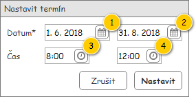
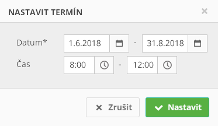

Formulář slouží k nastavení parametrů termínu (časového okna), který může být jeho vstupním parametrem.
Výchozí nastavení hodnot jednotlivých komponent prázdného formuláře je uvedeno ve sloupci Výchozí hodnota, a to v tabulce s Přehledem UI komponent. Formulář je zobrazován v modálním okně.
Vstupní data formuláře jsou následující:

| Callout | Komponenta | Nadpis | Typ komponenty | Příklad hodnoty | Hodnota | Výchozí hodnota | Formát | Zpřístupněná | Viditelná | Chování | Validace | Poznámka |
|---|---|---|---|---|---|---|---|---|---|---|---|---|
| 1 | Datum od | Datum* | DatePicker | 15. 8. 2018 | Vstupní data: Datum od. | Zítřejší datum | Datum | Vždy | Vždy | Po nastavení Datum od, pokud je Datum do rovno NULL, nebo Datum do < Datum od, se Datum do nastaví na Datum od. | Větší nebo rovno dnešní datum. | – |
| 2 | Datum do | – | DatePicker | 31. 8. 2018 | Vstupní data: Datum do. | – Poznámka: Vyplní se jako reakce na vyplnění Datum od – viz sloupec Chování. | Datum | Vždy | Vždy | – | Větší nebo rovno Datum od. | – |
| 3 | Čas od | Čas | TimePicker | 8:00 | Vstupní data: Čas od. | – | Čas | Vždy | Vždy | Po nastavení Čas od, pokud je Čas do roven NULL, nebo Čas do < Čas od, se Čas do nastaví na Čas od. | Může být NULL. | – |
| 4 | Čas do | – | TimePicker | 14:00 | Vstupní data: Čas do. | – | Čas | Vždy | Vždy | – | Pokud je Čas od roven NULL:
Jinak:
| – |
